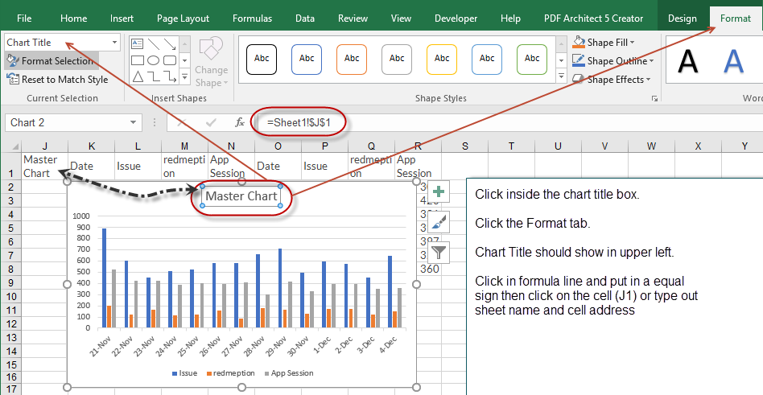
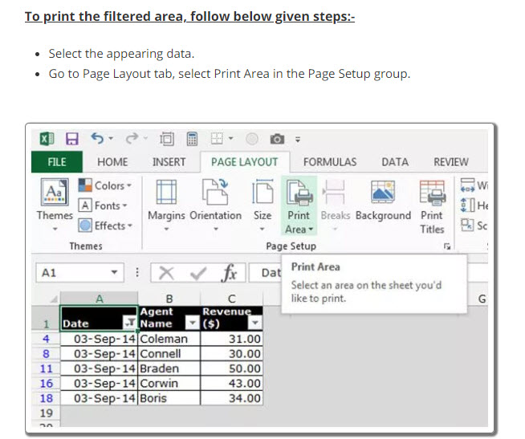
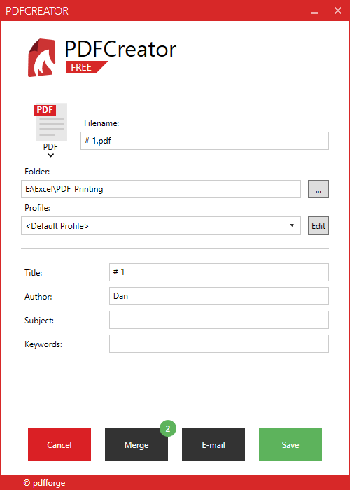
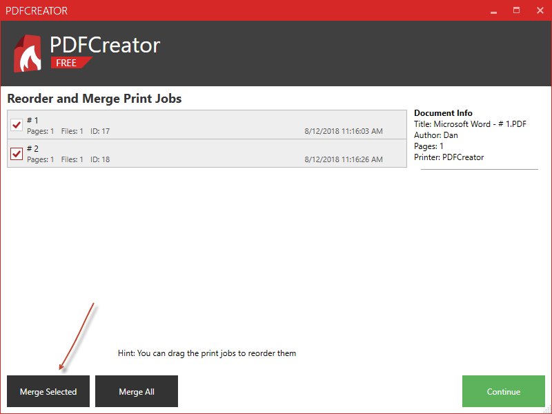
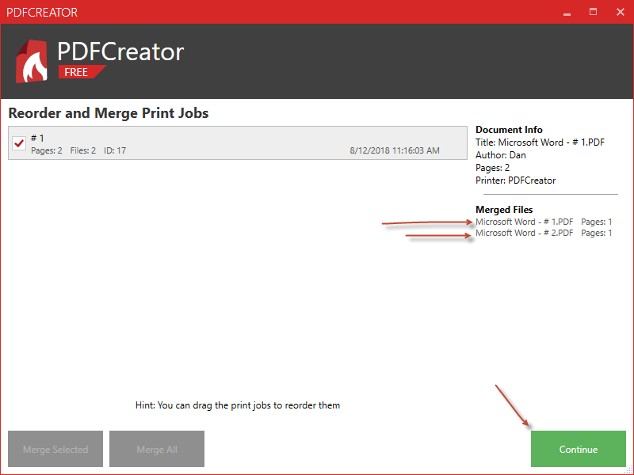

Link Chart Title to cell.

Position a Chart
The position will only be set accurately when the active window is not zoomed in or out. So make sure that ActiveWindow.Zoom = 100 before you set the .Left and .Top-properties.
Sub PositionChart()
ActiveWindow.zoom = 100
With ActiveSheet.Shapes("Chart 1")
.Left = Range("D1").Left ' this will choose the column "D"
.Top = Range("B2").Top ' will choose the row "2"
.Height = 216 ' Note one (1) inch = 72 so 3 inches = 216
.Width = 360 ' Note one (1) inch = 72 so 5 inches = 360
End With
End Sub
Move a Chart from one sheet to another
Sub MoveChart()
ActiveSheet.ChartObjects("Chart 1").Activate
ActiveChart.Location Where:=xlLocationAsObject, Name:="Sheet2"
End Sub
Move Chart with Inputbox
Sub PositionChart()
Dim c As String
Dim r As Integer
Dim h As Variant
Dim w As Variant
On Error GoTo Line1
c = InputBox("Enter Column Letter A - Z Only")
c = Left(c, 1) 'This will confirm "C" is the first letter should the user type in for example G1, "C" will be "G"
r = InputBox("Enter Row Number")
h = InputBox("Enter Height in Inches")
If Not IsNumeric(h) Then
MsgBox "Height Must be a number, Please try again"
GoTo Line1
End If
w = InputBox("Enter Width in inches")
If Not IsNumeric(w) Then
MsgBox "Width Must be a number, Please try again"
GoTo Line1
End If
ActiveWindow.zoom = 100
With ActiveSheet.Shapes("Chart 1")
.Left = Range(c & 1).Left ' this will choose the column "D"
.Top = Range(c & r).Top ' will choose the row "2"
.Height = h * 72 ' 72 = one inch
.Width = w * 72
End With
Line1:
End Sub
StandardChartSize and Position on same sheet
Sub StandardChartSize()
Dim q As String
Dim c As String
Dim r As Integer
Dim h As Variant
Dim w As Variant
On Error GoTo Line1
c = InputBox("Enter Column Letter A - Z Only")
c = Left(c, 1)
r = InputBox("Enter Row Number")
q = InputBox("Enter 1 for 2 x 2." & vbCrLf & "Enter 2 for 3 x 5" & vbCrLf & "Enter 3 for 5 x 6 1/2", "Standard Sizes")
If q = 1 Then
h = 2
w = 2
End If
If q = 2 Then
h = 3
w = 5
End If
If q = 3 Then
h = 5
w = 6.5
End If
ActiveWindow.zoom = 100
With ActiveSheet.Shapes("Chart 1")
.Left = Range(c & 1).Left ' this will choose the column "D"
.Top = Range(c & r).Top ' will choose the row "2"
.Height = h * 72 ' 72 = one inch
.Width = w * 72
End With
Line1:
End Sub
Print
Choose a printer before printing
Dim rng as range
set rng = Range("A1:G6")
' This line allows you to choose the printer before it prints
Application.Dialogs(xlDialogPrinterSetup).Show
rng.PrintOut ' This will print
'rng.printpreview 'This will preview and then you can print
Print a filtered table and print only what can be seen (WebLink)

Print a range of cells
Sub PrintYourPlays()
'
Dim rng as Range
set rng = Range
("G18:L50")
rng.PrintOut Copies:=1, Collate:=True
ActiveSheet.DisplayPageBreaks = False
End Sub
Print a range of cells without the cell color
Sub PrintYourPlays()
PrintYourPlays Macro
Range("G18:L50").Select
With Sheets("Home").Cells.Interior
- .Pattern = xlNone
.TintAndShade = 0
.PatternTintAndShade = 0
End With
Selection.PrintOut Copies:=1, Collate:=True
ActiveSheet.DisplayPageBreaks = False
Range("F17").Select
End Sub
Print Region of cells
Sub PrintRegion()
PrintRegion Macro
Range("F17").CurrentRegion.Select
Selection.PrintOut Copies:=1, Collate:=True
ActiveSheet.DisplayPageBreaks = False ' This line Kills or Deletes the print lines on the sheet (Dotted Lines).
Range("F17").Select
End Sub
Export Sheet2 as PDF - How to print a worksheet as a pdf
Sub printws2As_PDF()
Dim ws1 As Worksheet
Dim ws2 As Worksheet
Dim sPath As String
Dim Fname As String
Set ws1 = Worksheets("Sheet1")
Set ws2 = Worksheets("Sheet2")
sPath = ActiveWorkbook.Path
Fname = ws1.[B1]
ws2.Activate
ActiveSheet.ExportAsFixedFormat Type:=xlTypePDF, Filename:= _
sPath & "\" & Fname & ".PDF", Quality:=xlQualityStandard, _
IncludeDocProperties:=True, IgnorePrintAreas:=False, OpenAfterPublish:= _
False
End Sub
How to combine multiple PDF files into one.
- Open the PDF file('s) and Print to PDF Creator
- PDF Creator will open and you can Press Merge files



Export as PDF
Sub Save2PDF_AllPages()
-
Dim Fname As String
Fname = InputBox("Enter file name")
ActiveWorkbook.Save
ActiveSheet.ExportAsFixedFormat Type:=xlTypePDF, _
Filename:=Fname, _
Quality:=xlQualityStandard, IncludeDocProperties:=True, _
IgnorePrintAreas:=False,
OpenAfterPublish:=False
End Sub
Sub Save2PDF_Selected_Pages()
- Dim Fname As String
Dim frompage As Integer
Dim topage As Integer
Fname = InputBox("Enter file name")
frmpage = InputBox("Enter page number of first page to export")
topage = InputBox("Enter last page number to export")
ActiveWorkbook.Save
ActiveSheet.ExportAsFixedFormat Type:=xlTypePDF, _
Filename:=Fname, _
Quality:=xlQualityStandard, _
IncludeDocProperties:=True, _
IgnorePrintAreas:=False, _
From:=frmpage, _
To:=topage, _
OpenAfterPublish:=False
End Sub
Print to PDF
PDF Creator download https://www.pdfforge.org/pdfcreator/download
VBA code to print excel to PDF and give PDF a password.
Sub PDF_Print ()
ActiveSheet.Printout ActivePrinter:="PDFCreator"
End Sub
www.contextures.com